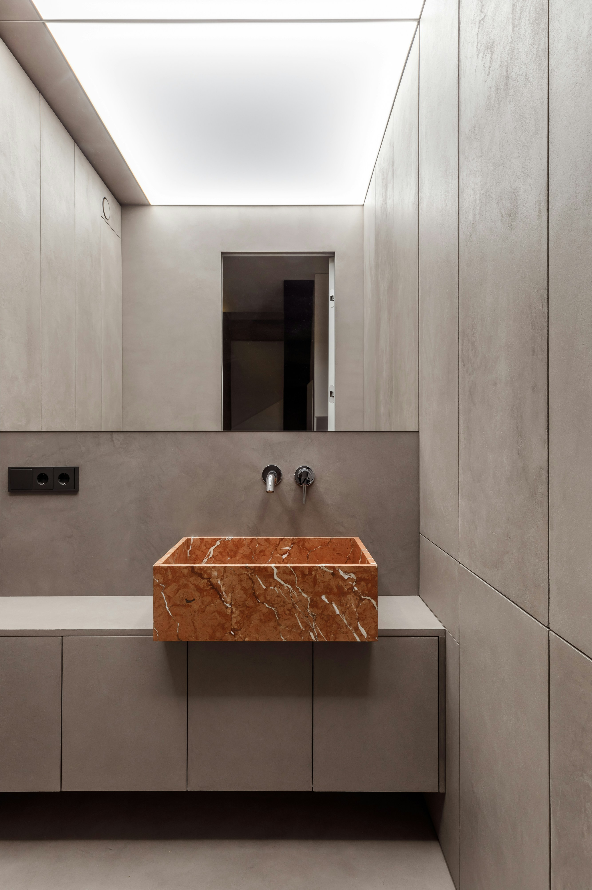
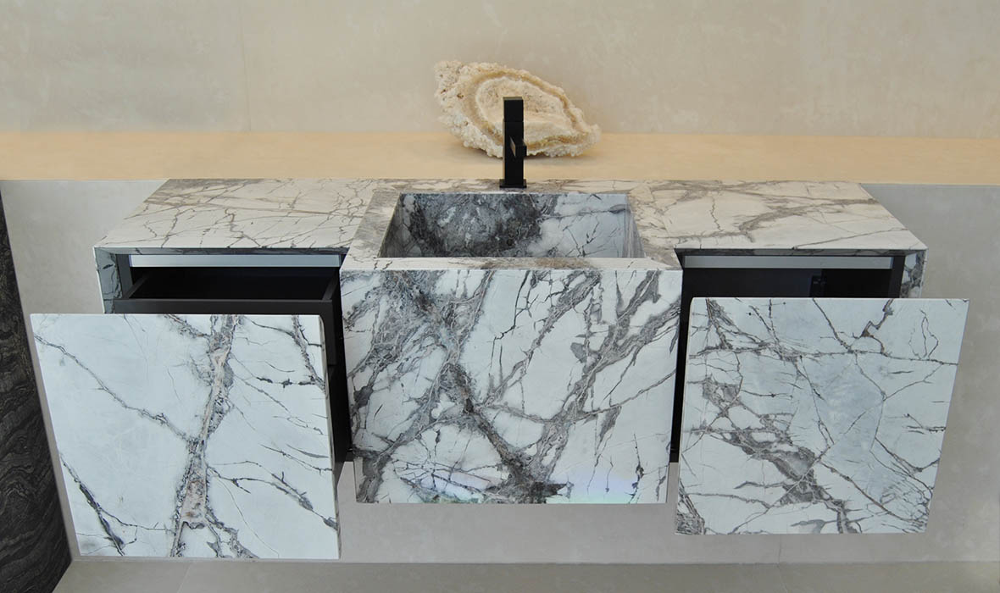

Novosti

Od ideje do Vašeg proizvoda
Zanima vas kako izgleda cjelokupni proces obrade kamena? Počevši od kamenog bloka i od kud dolazi do finalnog proizvoda.Više ...

Vrste kamena
Kada govorimo o kamenu, najčešće se spominje mramor. No, jeste li znali da postoji više vrsta kamena koji se koriste?Više ...

Spajanje klasičnih i modernih elemenata
Klijenti se sve više odlučuju za spoj modernih i klasičnih elemenata u dizajnu kuhinja. Više ...

Mramorna kupaonica
Kupaonica vam je previše jednostavna i obična. Donosimo vam nekoliko primjera kako oživjeti prostor kamenim sanitarijama. Više ...

Unikatan dodatak vašem interijeru
U prostoriji vam nedostaje neki dodatak? Tražite unikatan dodatak koji će podignuti vaš interijer? Više ...